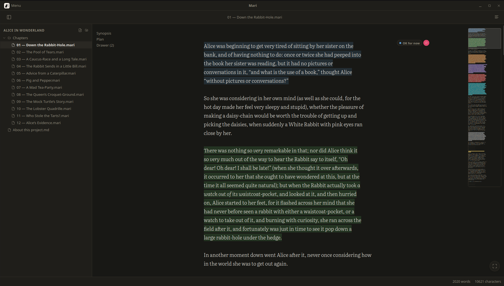

Your chapter
Detective Hale stopped in the doorway. He crossed the room without a sound.

Scroll, and watch a first draft get good.
Press F11, and concentrate on pure writing experience.
Download
Mari runs on Windows, macOS and Linux. Pick yours and start writing.
Mari is a desktop app. Open this page on your computer to download it.
Apple and Microsoft charge for the certificate that stops their warnings. Mari is free and hasn't paid, so both complain once. The file is fine.
Windows says "unrecognised app". Click More info, then Run anyway.
macOS says Mari is damaged. It isn't. Drag Mari to Applications, open Terminal, paste this line once, then open Mari normally:
xattr -dr com.apple.quarantine /Applications/Mari.appYou're on a phone. Mari runs on Windows, macOS and Linux, so open this page on your computer to install it.
Your computer
Free. No account. No email.